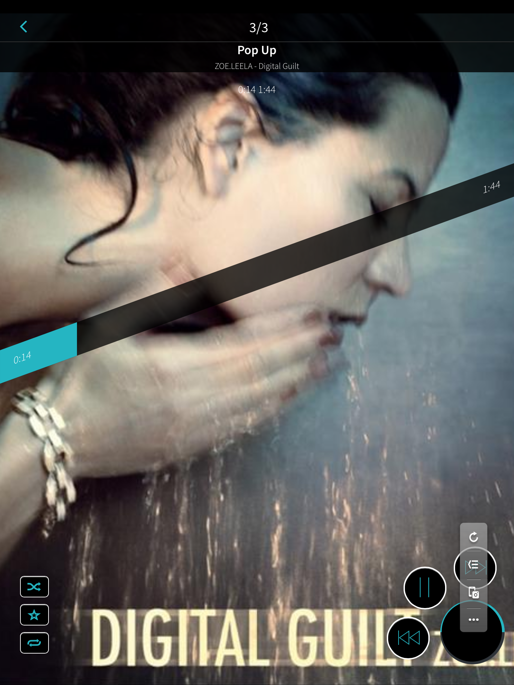

Masahiro Tanaka / Asial Corp.

アシアル株式会社の代表取締役
Monacaのプロダクトマネージャー
趣味: 鉄道模型と飛行機
Web技術(WebView)を用いるネイティブ形式のアプリ。
JavaScriptでネイティブアプリを作る開発手法の１つ。
Cordova = PhoneGap と捉えてOK

①カメラやファイル操作などのAPIを拡張する
②単体パッケージとしてアプリを動作させる
HTML5仕様で定義される、パッケージ型アプリ。
≒ ハイブリッドアプリ。
HTML5ネイティブなプラットフォームの登場
あんなこともこんなことも。
そう、HTML5ならね。
デモ
１．ネイティブに極力近づける
２．自己ワールドを展開する
HTML5、CSS3、JavaScriptで模倣する
ネイティブUIコンポーネントを使う
Learn Hindi Free
|  |  |
 |
| Onsen UI | Exfm | Rormix |
<meta name="viewport" content="width=device-width, initial-scale=1, minimum-scale=1, maximum-scale=1, user-scalable=no">
タップ時の300msの遅延: fastclick.jsで解決
-webkit-user-select: none;
ドキュメントの文字を選択できなくする
-webkit-tap-highlight-color: rgba(0, 0, 0, 0);
タップ時のリンク要素の枠を非表示にする
-webkit-touch-callout: none;
リンク長押し時のメニューを非表示にする
-webkit-overflow-scrolling: touch;
慣性スクロールを適用する（バグあり）
-webkit-transform: translateZ(0);
レイヤーを作成しGPU合成をONに
読み込み～描画までの順序、ボトルネックを知る。

https://docs.google.com/presentation/d/1IRHyU7_crIiCjl0Gvue0WY3eY_eYvFQvSfwQouW9368/present
例: jQuery Mobileで複数ページを定義する例
JS → スタイル/レイアウト → 描画 → 合成
消したいコンテンツ
<script>
// 再レイアウト処理が実行するため遅い
document.getElementById("hideme").style.display="none;";
// Composite（合成）のみ実行
document.getElementById("hideme").style.opacity="0";
</script>
極力レイアウト（リフロー）処理を避ける
translateZ(0)requestAnimationFrameを使う| ローカル開発 | コマンドライン | クラウド型開発 |
|---|---|---|
| Xcode、Eclipse | Cordovaコマンド | Monacaや アプリカン |
| ネイティブ開発にハイブリッド機能を組み込む | gruntなどのJSツールやエディタを利用できる | ローカルにインストールすることなく開発を開始できる |
デバッグ対象のOSバージョンなどの状況に応じて使い分け
USBで接続されたiOSに、PCのSafariからリモートデバッグ

USBで接続されたAndroid版Chromeに、PCのChromeからリモートデバッグ

node.jsで作られたリモートインスペクター

Androidの標準WebViewにJSデバッグ機能を追加

デモ: https://www.jshybugger.com/
※有償サービス
コードの変更を検知して自動的にブラウザーを再読込
＋
共有する
一緒にHTML5アプリ開発を盛り上げていきましょう！
{kind=link}